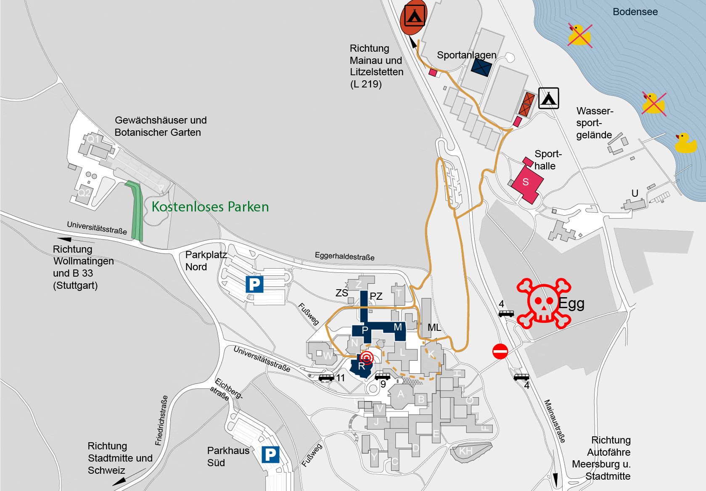

Ich will zur ZaPF! Wo muss ich hin?
Die ZaPF wird in Konstanz hauptsächlich in unserer Campus-Universität auf dem Gießberg stattfinden.
- Adresse der Universität: Universitätsstr. 10, 78464 Konstanz
- Tagungsbüro: Gebäude R, Raum R501, Zugang über das Fenster außen am R-Gebäude

Anreise mit dem Fahrrad
Der Bodenseeradwanderweg führt unter anderem direkt an unserer Uni vorbei. Meistens kommt man von Radolfszell aus nach Konstanz, da hier die schönste Strecke lang geht. Der Radweg ist relativ gut ausgeschildert. Ihr folgt dem Radweg nach Konstanz rein und in Konstanz, bis er nach rechts über die Fahrradbrücke abbiegt. Hier müsst ihr nach links in die Jahnstraße. Am Zähringerplatz muss man links schräg in eine kleinere Straße (Friedrichsstraße) abbiegen. Hier dürfen aus dieser Richtung keine Autos durchfahren. Da ist rechts auch ein relativ guter Dönerladen. Geradeaus über den Kreisel und dann immer der Friedrichstraße nach den Berg hoch. Irgendwann wird diese zur Universitätsstraße. Ja, es geht irgendwann etwas durch den Wald, ihr seid dann trotzdem noch richtig. Oben auf dem Berg liegt die Universität dann rechts von euch.
Anreise mit der Bahn
Der Bahnhof in Konstanz wird inzwischen nur noch von Regionalzügen angefahren. Es empfiehlt sich nach Karlsruhe, Singen oder Radolfzell zu fahren und von dort mit der Schwarzwaldbahn oder dem Seehas anzureisen. Der Bahnhof liegt in der Altstadt, zur Uni fahren direkt vor dem Bahnhof die Linien 9A und 9B, die Universität ist deren Endhaltestelle. Wenn ihr die Möglichkeit habt am Bahnhof Wollmatingen auszusteigen, könnt ihr auch mit der Linie 11 fahren, deren Entenhaltestelle ist auch die Universität. U-, S- oder sonstige Bahnen gibt es in Konstanz leider nicht, genauso wenig wie eine Seilbahn,...
Anreise mit dem Schiff
...dafür aber einen Katamaran von Friedrichshafen und eine Fähre von Meersburg aus. Von der Fähre in Staad aus fahren die Buslinien 1 und 15, beide halten am Tannenhof, von dort aus könnte man zur Uni laufen oder in die 9B umsteigen. Damit ihr euch nicht verlauft, könnt ihr uns Bescheid geben, dann gibt es noch genauere Informationen. Der Hafen mit Anlegestelle vom Katermaran liegt direkt neben dem Bahnhof.
Anreise mit dem Flugzeug
Konstanz besitzt einen eigenen Segelflugplatz, kommt also gerne mit dem eigenen Segelflieger. Alternativ könnt ihr mit herkömmlichen Fliegern nach Zürich fliegen und von dort aus mit dem Fernbus oder mit dem Zug nach Konstanz anreisen oder nach Friedrichshafen fliegen und die Fähre und/oder den Schnellbus nehmen.
Anreise mit dem Fernbus
Konstanz wird von MeinFernbus und DeinBus angefahren. Beide Busse halten am Döbeleplatz. Von dort kann man zur Bushaltestelle Schnetztor (50m) laufen und dort die Buslinie 9A oder 9B zur Uni nehmen. MeinFernbus hält teilweise auch in Allmannsdorf. Hier kann man entweder direkt zur Uni laufen oder in den Bus der Linie 1 einsteigen. Zur Weiterfahrt mit der Linie 1, lies dir bitte die Anreise mit dem Schiff durch.
Anreise mit dem Auto
Von Stuttgart (180 km)
A 81 in Richtung Singen. Ab dem Kreuz Hegau ist Konstanz ausgeschildert, ihr folgt der B33 bis zur Abzweigung nach Konstanz. An dieser fahrt ihr geradeaus weiter auf der L220 bis ihr im Stadtteil Wollmatingen ankommt. Dort biegt ihr an der Ampel vor der Grundschule Wollmatingen schräg links auf die Schwaketenstraße ab. Diese geht in die Universitätsstraße über, der ihr bis zur Beschilderung zu den Parkplätzen Süd folgt.
Von München (220 km)
 A 96 in Richtung Lindau. In Lindau auf die B 31 in Richtung Meersburg. Von Meersburg mit der Autofähre nach Konstanz. In Konstanz könnt ihr wieder den Wegweisern zur „Universität“ folgen, das heißt ihr folgt der Schiffstraße bis ihr rechts in die Sonnenbühlstraße abbiegt, an der Ecke ist ein Penny. Dieser folgt ihr bis zur Friedrichsstraße, in die ihr rechts einbiegt, dort ist auf der rechten Seite ein Studierendenwohnheim. Dieser Straße folgt ihr auf den Uniberg hinauf und folgt dann der Beschilderung zum Parkplatz Süd.
Alternativ zur Fähre könnt ihr auch von Meersburg aus noch den restlichen See umfahren, das dauert je nach Verkehr dann noch eine Stunde. Dadruch verpasst ihr eben unsere tolle Autofähre, dafür zahlt ihr diese aber auch nicht. Ihr kommt dann von der gleichen Richtung nach Konstanz reingefahren wie von Stuttgart aus und solltet dann dieser Wegbeschreibung folgen.
A 96 in Richtung Lindau. In Lindau auf die B 31 in Richtung Meersburg. Von Meersburg mit der Autofähre nach Konstanz. In Konstanz könnt ihr wieder den Wegweisern zur „Universität“ folgen, das heißt ihr folgt der Schiffstraße bis ihr rechts in die Sonnenbühlstraße abbiegt, an der Ecke ist ein Penny. Dieser folgt ihr bis zur Friedrichsstraße, in die ihr rechts einbiegt, dort ist auf der rechten Seite ein Studierendenwohnheim. Dieser Straße folgt ihr auf den Uniberg hinauf und folgt dann der Beschilderung zum Parkplatz Süd.
Alternativ zur Fähre könnt ihr auch von Meersburg aus noch den restlichen See umfahren, das dauert je nach Verkehr dann noch eine Stunde. Dadruch verpasst ihr eben unsere tolle Autofähre, dafür zahlt ihr diese aber auch nicht. Ihr kommt dann von der gleichen Richtung nach Konstanz reingefahren wie von Stuttgart aus und solltet dann dieser Wegbeschreibung folgen.
Falls ihr eine Vignette besitzt, könnt ihr auch über Bregenz und die Schweiz fahren, wodurch ihr eben wieder unsere tolle Autofähre verpasst. Ihr kommt dann über den Hauptzoll nach Konstanz und folgt dann der Wegbeschreibung von Zürich aus.
Von Zürich (75 km)
Autobahn A7 Richtung Kreuzlingen/Konstanz. Nach der Grenze folgt ihr zunächst der Beschilderung Richtung „Mainau“ über die Europabrücke. Im nächsten Kreisverkehr nehmt ihr die Abfahrt Oberlohnstraße und fahrt über die Bahn bis zur Fürstenbergstraße. Auf diese biegt ihr links und die nächste Straße auf den Buhlenweg rechts ab. Wenn ihr am Netto vorbei gefahren seid, seid ihr zu weit gefahren, in dem Fall könnt ihr weiter fahren bis nach rechts die Schwaketenstraße abgeht (siehe Wegbeschreibung von Stuttgart aus). Am Ende des Buhlenwegs auf der anderen Seite eines Buckels fahrt ihr rechts auf die Universitätsstraße und folgt dieser bis zur Beschilderung zu den Parkplätzen Süd.
Parkplatzsituation
Die Universität bietet Parkplätze zu einem Tagespreis an, der an einem Automaten oder per SMS gezahlt werden kann.